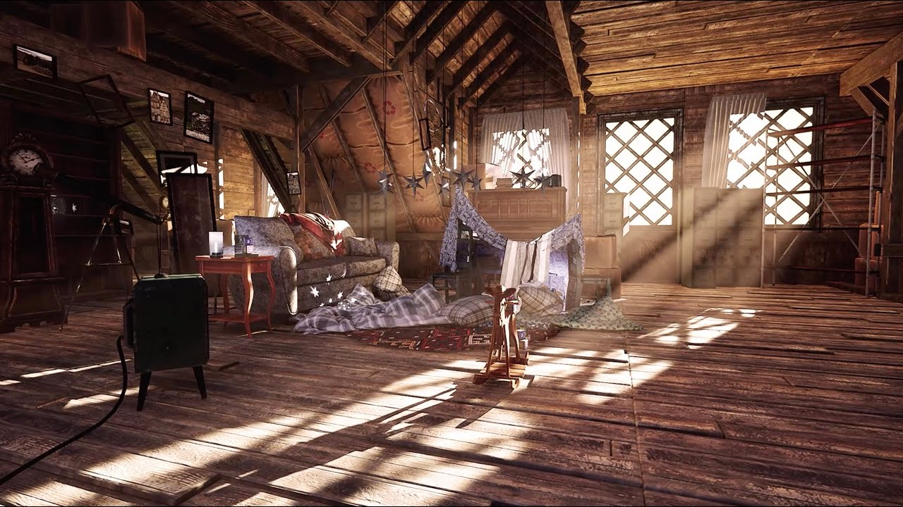
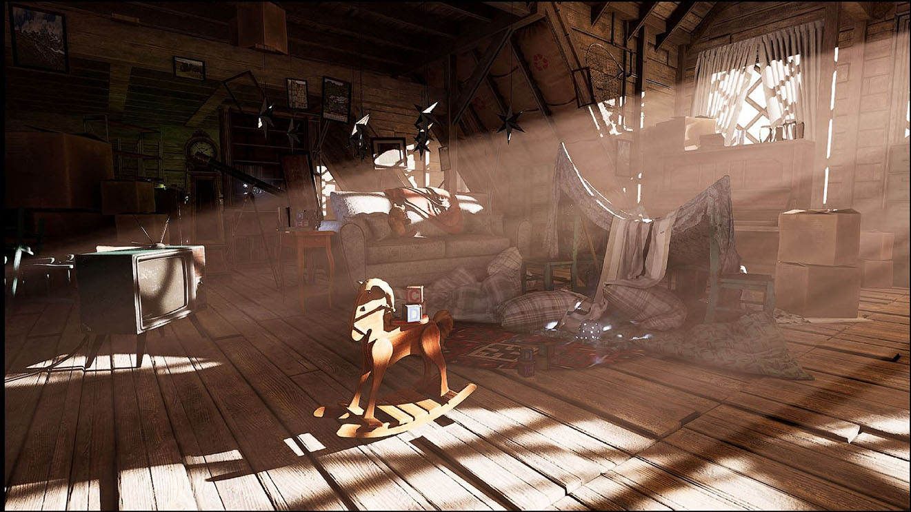

阁楼场景
Interior lighting scene with strong directional light through a limited opening. A good case for observing how global illumination handles high-contrast interiors.

阁楼内部，强烈的阳光透过一扇小窗户照射进来。
同一画面中既有直射的阳光，也有深深的阴影，两者之间还有大量的昏暗散射光。
下载

阁楼场景采用增强型光线追踪全局光照路径渲染，通过窗户形成体积光通道。
在 NVIDIA 的增强型 RTGI 路径下，同样的场景也会出现，NvRTX Caustics 分支为 Vite 贡献了这一功能。
What it exercises
An attic is a specific and demanding lighting situation: a strong directional source entering through a small opening, a large volume of dim indirect light, and a lot of geometric clutter casting into it.
Three things get tested harder here than in an average scene:
- Dynamic range. Direct sun and deep shadow in the same frame stresses the tonemapper and exposure setup. Get this wrong and the scene either blows out at the window or crushes everything else to black.
- Indirect bounce falloff. How light attenuates as it bounces further from the opening is what sells the depth of the space. This is where probe density and GI method choice show.
- Contact detail. Clutter against floors and walls needs ambient occlusion and ideally SSGI to read as grounded.
What to look at
Compare static and dynamic DDGI here. A static bake is entirely adequate for a scene where nothing moves, and it is the cheaper option; the value of dynamic DDGI only appears once the sun angle or an occluder changes. Moving the directional light makes the distinction obvious.
Then look at the anti-aliasing treatment. Fine clutter geometry against a bright window is a hard case, and it is where SMAA's behaviour differs most visibly from TAA's.